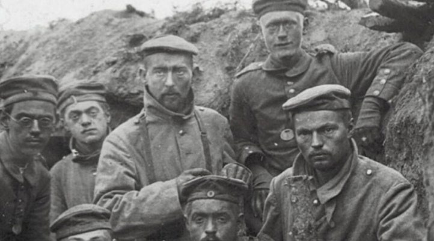
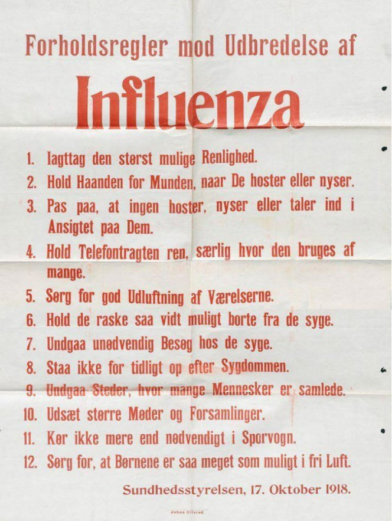
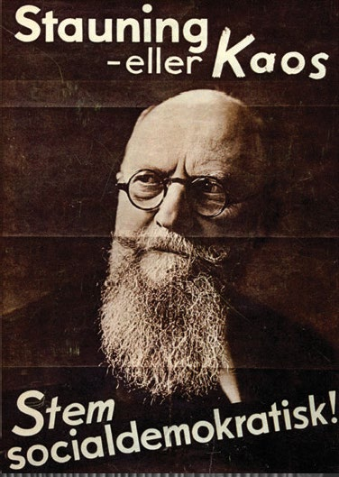

1.9 – VERDENSKRIG, KRISER OG SOCIALREFORMER (1914-40)
sidde 33
Socialreformer (1914-40)
1914-18 rasede 1. Verdenskrig mellem Europas stormagter. Danmark undgik at blive direkte involveret. De efterfølgende år var præget af en højst dødelig influenzaepidemi samt politisk uro både i Danmark og resten af verden. Mange europæiske lande udviklede sig til diktaturstater. I 1930’erne var verden i dyb økonomisk krise. Også i Danmark voksede arbejdsløsheden kraftigt. Det udløste mange konflikter på arbejdsmarkedet og gav Socialdemokratiet stor opbakning. Det motiverede også de gamle partier til sammen at finde løsninger, som var med til at sikre, at antidemokratiske ideologier aldrig for alvor vandt tilslutning i Danmark.
FØRSTE VERDENSKRIG (1914-18)
I 1914 brød 1. Verdenskrig ud. De største europæiske magter blev inddraget i krigen: På den ene side stod Tyskland, Østrig-Ungarn og Osmannerriget, og på den anden side stod Frankrig, Rusland, Storbritannien, Italien og siden også USA. Det neutrale Danmark lå geografisk tæt på krigens fronter, men blev ikke direkte berørt af verdenskrigen.
Efter pres fra Tyskland valgte Danmark dog i 1914 at lægge miner ud i nogle af de danske farvande. Tysklands formål var at forhindre britiske krigsskibe i at sejle ind i Østersøen og dermed true Tyskland derfra. Men minefelterne kunne også hindre tyske skibe i at sejle gennem de danske stræder. Én dansk befolkningsgruppe blev særligt involveret i 1. Verdenskrig. Det var de dansksindede slesvigere syd for grænsen, som var blevet tyske statsborgere efter Danmarks tab af Slesvig i den 2. Slesvigske Krig i 1864.Danske soldater
Danske soldater som deltog i første verdenskrig.
Læremateriale Til Indfødsretsprøven

sidde 34
I alt døde cirka 6.000 danske sønderjyder i tysk krigstjeneste under 1. Verdenskrig. Også de danske kolonier i Vestindien kom i fokus på grund af krigen. USA frygtede, at Tyskland skulle besætte Dansk Vestindien, og tilbød derfor i 1915 den danske rege ring at købe Sankt Thomas, Sankt Croix og Sankt Jan (på engelsk Sct. John). Efter en folkeafstemning i Danmark blev øerne i 1917 solgt for 25 millioner. dollars; til gengæld for salget anerkendte USA’s regering, at Grønland fuldt og helt hørte under Danmark.
DEN SPANSKE SYGE
Hen mod slutningen af krigen i 1918 blev verden og Danmark ramt af en meget aggressiv, smitsom og dødbringende influenzavirus, som fik navnet ”Den Spanske Syge”. Sygdommen opstod slet ikke i Spanien, men fik sit navn, fordi det var spanske aviser, som først skrev om den. Eftersom Danmark ikke deltog direkte i 1. verdenskrig, var landet bedre rustet til at bekæmpe sygdommen med en befolkning, som var bedre ernæret, og et sundhedsvæsen, som var mindre belastet end de mange krigsførende landes.
Men alligevel kunne danske myndigheder ikke gøre meget. Man vidste kun lidt om sygdommen og kunne for eksempel ikke udvikle en vaccine. Mange influenzapa tienter fik også lungebetændelse oveni, som man, før penicillinen blev opdaget i 1928, ofte døde af.
Sundhedsstyrelsen forsøgte via løbesedler at give befolkningen råd om blandt andet god hygi ejne og om at undgå kontakt med hinanden, ligesom nogle skoler og forlystelser lukkede ned. Men alt dette var ikke nok til at få kontrol med sygdommen, som ramte landet i flere bølger i perioden 1918-20. Specielt for Den Spanske Syge er også, at den i høj grad slog relativt unge mennesker ihjel. De fleste døde var mellem 20 og 40 år. I alt tog sygdommen op mod 50 millioner menneskeliv, herunder cirka 15.000 i Danmark.Opfordringer fra Sundhedsstyrelsen mod udbredelsen af ’Den Spanske Syge’ i 1918.
Opfordringer fra Sundhedsstyrelsen mod udbredelsen af ’Den Spanske Syge’ i 1918.
Læremateriale Til Indfødsretsprøven

sidde 35
GENFORENINGEN OG FORFATNINGSKRISEN
Tyskland tabte 1. Verdenskrig. Det gjorde det muligt for Danmark at kræve de primært dansksindede områder af Slesvig tilbage. I 1920 stemte befolkningen i Nordslesvig og Mellemslesvig ved to forskellige afstemninger om, hvorvidt den ønskede at tilhøre Tyskland eller Danmark. Afstemningen i Nordslesvig fandt sted i februar 1920.
Et stort flertal stemte for, at Nordslesvig skulle genforenes med Danmark. Ved afstemningen i marts 1920 i Mellemslesvig, hvor Flensborg var den største by, bestemte et stort flertal derimod, at området skulle forblive under Tyskland.
Den 15. juni 1920 blev grænsen formelt flyttet sydpå fra Kongeåen til den nuværende grænse mellem Danmark og Tyskland. Nordslesvig – nu kaldet Sønderjylland – blev dermed genforenet med Danmark.
Man kalder Sønderjyllands tilbagevenden til Danmark for Genforeningen. Men der er dog stadig et tysk mindretal (i 2020 på cirka 15.000) på den danske side af grænsen og et dansk mindretal (i 2020 på cirka 50.000) på den tyske side. Disse mindretals rettigheder blev i 1955 lagt fast i København-Bonn-erklæringerne, hvilket har sikret en fredelig udvikling i grænselandet.Christian 10. rider o
Christian 10. rider over grænsen i 1920.
Kort før Genforeningen oplevede Danmark i forbindelse med Påskekrisen sin alvorligste forfatningskrise i nyere tid. Inden da havde kong Christian 10. (191247) og regeringen i længere tid været uenige. Det var især uenigheden om den nye grænse til Tyskland, der udløste Påskekrisen.
Kongen mente, at regeringen – på trods af afstemningsresultaterne – skulle forsøge at få mere af Slesvig tilbage til Danmark end blot Nordslesvig. Dette afviste regeringen. I påsken 1920 afskedigede Christian 10. regeringen på grund af denne uenighed. Dette skete, selvom regeringen ikke havde et flertal imod sig
Læremateriale Til Indfødsretsprøven
sidde 36
i Folketinget. Kongens optræden under Påskekrisen i 1920 udløste store demon strationer og politiske protester, og den blev af dele af dagspressen betegnet som et statskup. Flere begyndte at tale om helt at afskaffe monarkiet. Krisen drev over, da kongen og de politiske ledere efter intense forhandlinger blev enige om at udpege en ny midlertidig regering og udskrive nyvalg. Siden da har kongemagten ikke blandet sig direkte i politik.
ØKONOMISK KRISE OG SOCIALREFORMER
I 1917 tog bolsjevikkerne (kommunisterne) magten i Rusland, som blev omdannet til Sovjetunionen. Fascismen og nazismen vandt frem i for eksempel Italien (1922) og i Tyskland (1933), og mange andre europæiske lande fik auto ritære regimer i løbet af 1920’erne og 1930’erne. Alt sammen var det udtryk for en bevægelse i en ikke-demokratisk retning. Men i Danmark lykkedes det at fastholde demokratiet.
Samtidig indtraf en meget alvorlig international økonomisk begivenhed i denne periode. Det var børskrakket på Wall Street i New York i oktober 1929. Aktiekur serne faldt voldsomt, og den økonomiske krise spredte sig til resten af verden. I Danmark blev især landets største erhverv, landbruget, hårdt ramt af krisen. Priserne på korn og kød faldt dramatisk. Tusindvis af landmænd blev tvunget til at sælge deres gårde, fordi de ikke tjente penge nok. Arbejdsløsheden steg voldsomt og nåede op over 30 procent i begyndelsen af 1930’erne.Børskrakket i 19
Børskrakket i 1929 på Wall Street, New York.
Læremateriale Til Indfødsretsprøven
sidde 37
I 1924 var cigarsortereren Thorvald Stauning blevet Danmarks første socialdemokratiske statsminister.
I denne regering, som varede to år frem til 1926, indgik også landets første kvindelige minister. Hun hed Nina Bang og var undervisningsminister. I 1929 dannede Socialdemokratiet igen regering – denne gang sammen med Det Radikale Venstre. Regeringen forsøgte at mildne krisen ved forskellige indgreb. Den 30. januar 1933 – tilfældigvis samme dag som Adolf Hitler blev rigskansler i Tyskland – indgik regeringen og Venstre det såkaldte Kanslergadeforlig, der fik dette navn, fordi de afgørende forhandlinger fandt sted i statsminister Thorvald Staunings bolig i Kanslergade i København.
Kanslergadeforliget var et vidtgående forlig, der tog hensyn til både arbejds givernes og arbejdernes interesser. Forliget forhindrede lavere løn til arbejderne, men forbød strejker i et år. Det var også nødvendigt at støtte landbruget, der var hårdt ramt af den økonomiske krise. Forliget gjorde det nemmere for land mænd at låne penge, så de undgik at gå fallit. Samtidig blev den danske krone devalueret, det vil sige, at dens værdi blev sænket. Dette gjorde det nemmere at sælge landbrugsvarer til Storbritannien.
Og som led i forliget blev der også gennemført en såkaldt socialreform, der udvidede befolkningens sociale rettigheder og skabte mere ensartede regler for, hvornår den enkelte borger kunne få økonomisk hjælp af det offentlige – for eksempel som følge af arbejdsløshed eller sygdom.Danmarks første socialdemokratiske statsminister Thorvald Stauning. Her på en valgplakat fra 1935.
Danmarks første socialdemokratiske statsminister Thorvald Stauning. Her på en valgplakat fra 1935.Danmarks første kvindelige minister Nina Bang.
Danmarks første kvindelige minister Nina Bang.
Læremateriale Til Indfødsretsprøven

Fonte: Læremateriale til Indfødsretsprøven, SIRI.